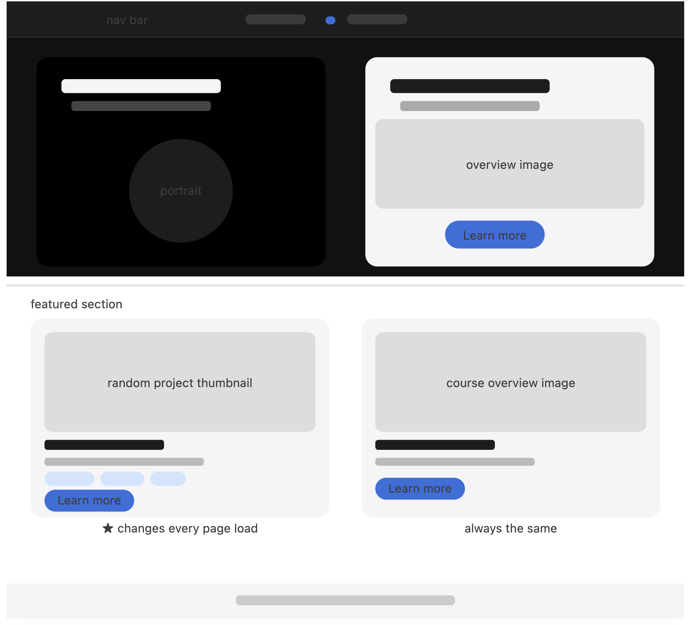
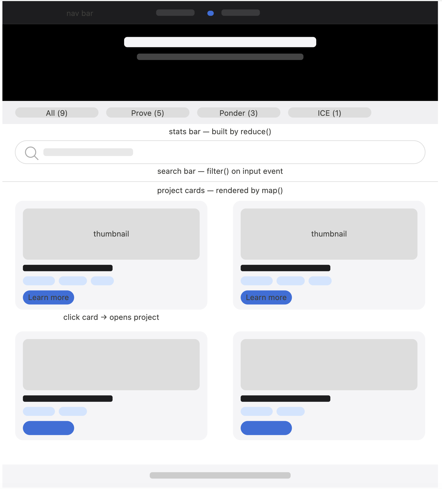

Overview
Purpose
This site is a personal web development portfolio that documents the projects I built throughout WDD 131. Its purpose is to show my growth as a front-end developert. It also serves as something I can share with instructors or future employers to show what I have learned.
Audience
The main audience is my WDD 131 instructor, who needs to review my work and verify that it meets the project requirements. A secondary audience is anyone in web development who might be looking for entry-level candidates and wants to see real examples of work.
Dynamic Elements
All project cards on the Projects page will be built by JavaScript. Here is a breakdown of every feature and how it satisfies the course requirements:
Feature 1 — Random featured project (Home page)
When the home page loads, a function picks a random project from the array and builds its card on the fly, dropping it into the left spot of the featured section. Every time you refresh the page you get a different project. The card on the right (about the course) stays the same always.
Feature 2 — Project cards with tag pills (Projects page)
A function takes the full list of projects, turns each one into an HTML card using map(), and inserts all of them into the page at once. Each card shows a thumbnail, title, short description, and colored tag pills for the week number, assignment type, and topic. Clicking anywhere on a card (not just a button) takes you to that project's sub-page. This works by putting a data attribute on each card and having one event listener on the whole container watch for clicks.
Feature 3 — Live search bar (Projects page)
As the user types into the search bar, a function runs filter() on the projects array and only keeps matches by title, week, type, or topic tag. The cards update instantly without reloading the page. If nothing matches, a "No results found" message appears instead. Clearing the bar brings all cards back.
Feature 4 — Stats bar (Projects page)
A small bar just above the search field shows the total number of projects and a count for each assignment type. A function uses reduce() to calculate those numbers from the projects array.
Branding
Website Logo
The logo is a small custom image shown in the center of the navigation bar, saved as images/logo.png. The name "Jose Ulloque" in the home page hero also works as a brand element.
Style Guide
Color Palette
The palette uses black and dark gray backgrounds with a light gray for cards and a single blue for buttons and links. This keeps things clean and lets the project images stand out.
Palette reference: https://coolors.co/000000-1d1d1f-306fdc-f5f5f7| Primary | Secondary | Accent 1 | Accent 2 |
|---|---|---|---|
| #000000 | #1d1d1f | #306fdc | #f5f5f7 |
Typography
The whole site uses Inter from Google Fonts. Different weights are used to create visual hierarchy. Heavier for titles, lighter for body text.
H1 · Inter 600
Jose Ulloque
Paragraph · Inter 300
Jose Ulloque
Normal paragraph example
Learning web development one project at a time. Each project represents a step in understanding how the modern web is built, from writing semantic HTML to building responsive CSS layouts and adding interactivity with JavaScript.
Colored paragraph example
This portfolio was built as the final project for WDD 131 at Brigham Young University – Idaho. It shows the skills I learned during the course, including mobile-first design, accessibility, and dynamic JavaScript.
Content
Home page — index.html
Hero section (dark background)
Jose Ulloque

Learning web development one project at a time.
Projects

Explore the assignments that helped me build confidence in HTML, CSS, and JavaScript.
Featured section
Random Project Card
This card is filled by JavaScript on every page load. It picks a random project from the array and shows its thumbnail, title, description, and tags.
Take WDD 131

Join Brother Keers' Dynamic Web Fundamentals class at BYU-Idaho. Button "Learn more" links to the instructor's directory page.
Projects page — projects.html
Hero title: "Projects". Subtitle: "Check out the assignments I built in WDD 131."
Prove Assignments
Mission Statement

Recreated the BYU-Idaho Mission Statement page from scratch, matching a given design mockup using only HTML and CSS.
Week 1 Prove HTML CSS Semantic HTMLDark Mode Toggle

Added a dark and light mode selector to the Mission Statement page using JavaScript — my first time using DOM manipulation and event listeners.
Week 2 Prove JavaScript DOM EventsCool Pics Part 1

Built a responsive photo gallery with a hamburger menu that collapses on mobile. Practiced media queries and mobile-first CSS design.
Week 3 Prove Responsive Design Media Queries CSS GridCool Pics Part 2

Extended the gallery with a JavaScript-powered modal that opens when you click any photo. The modal can be closed with a button, by clicking outside, or by pressing Escape.
Week 4 Prove JavaScript Modals EventsBook Blog Part 1

Designed a responsive book blog layout using CSS Grid, with a focus on accessibility and passing the WAVE accessibility checker.
Week 5 Prove CSS Grid Accessibility DesignBook Blog Part 2

Added JavaScript to the blog to load all book articles dynamically from an array of objects using map() and template literals instead of hard-coded HTML.
Week 6 Prove JavaScript Arrays Objects map()Credit Card Form

Built a credit card checkout form styled to look like an actual card using CSS Grid. Added JavaScript validation that checks the card number and expiration date before submitting.
Week 7 Prove Forms Validation CSS GridCharacter Card

Created an interactive card for a JavaScript course object. Clicking the enroll button increments the enrollment count live on the page using a method inside the object.
Week 8 Prove Objects Methods DOMRecipe Book Part 1

Built a recipe book page using Flexbox, with a search bar, a recipe card, and social media meta tags so the page previews nicely when shared.
Week 9 Prove Flexbox Meta Tags Responsive DesignRecipe Book Part 2

Added JavaScript to load a random recipe on page load and let users search by keyword. Results are filtered with filter() and sorted alphabetically.
Week 10 Prove JavaScript filter() sort()Ponder Assignments
Meta Tags and CSS

Built a page about HTML, CSS, and JavaScript while practicing meta tags, CSS selectors, combinators, and pseudo-class selectors.
Week 1 Ponder HTML CSS Meta TagsVariables and Constants

Practiced declaring variables and constants in JavaScript, explored how scope works, and logged outputs to the browser console.
Week 1 Ponder JavaScript Variables ScopeDOM Basics

Used JavaScript to select HTML elements and change their content, styles, and attributes in response to a dropdown menu selection.
Week 2 Ponder DOM querySelector EventsComputational Thinking

Planned and built a theme changer that switches the page background and font when the user picks a theme from a dropdown.
Week 2 Ponder JavaScript Conditionals DOMResponsive Design

Built a scripture reading page that adapts its layout to different screen sizes using media queries and mobile-first CSS, with a hamburger menu for mobile.
Week 3 Ponder Media Queries Mobile-FirstResponsive Menu

Added JavaScript to make the hamburger menu open and close on click, with a CSS animation that turns the three bars into an X when the menu is open.
Week 4 Ponder JavaScript classList CSS TransformsGallery with Modals

Built a responsive image gallery where clicking a thumbnail opens a full-size modal. The modal closes with a button, by clicking outside it, or by pressing Escape.
Week 4 Ponder JavaScript Modals CSS GridAccessibility & Design

Designed a movie review page that follows good design principles and uses ARIA attributes to make the page fully accessible to screen readers.
Week 5 Ponder Accessibility ARIA DesignArray Methods

Practiced JavaScript array methods by processing lists of grades and student data, with results printed to the page using template literals.
Week 6 Ponder Arrays map() filter() reduce()Dynamic Content

Used forEach and template literals to dynamically build and insert movie cards onto the page from an array of objects, instead of writing the HTML by hand.
Week 6 Ponder JavaScript forEach Template LiteralsCheckout Form

Built a checkout form that shows different inputs depending on whether the user pays by credit card or PayPal, with validation before the form can submit.
Week 7 Ponder Forms Validation ARIACourse Enrollment

Created a JavaScript object representing a course with sections and an enroll method. Clicking a button updates the enrollment count live on the page.
Week 8 Ponder Objects Methods DOMFlexbox Layout

Practiced Flexbox by building a media card and a gallery layout that rearrange themselves cleanly on different screen sizes.
Week 9 Ponder Flexbox Responsive DesignFiltering & Sorting

Built a hike finder app where a random hike shows on load and users can search by keyword. Results are filtered and sorted by difficulty.
Week 10 Ponder JavaScript filter() sort()Wireframes
Wireframes show the desktop layout. On mobile, cards stack in a single column.
Home — index.html
Hero with two side-by-side cards. Featured section below with the random project card on the left and the static course card on the right.

Projects — projects.html
Dark hero, then stats bar, then search bar, then the two-column project card grid. Clicking anywhere on a card goes to that project's sub-page.
